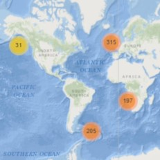

-
Overview of Marine Snow Catcher deployments
Marine Snow Catcher deployments This map shows all MSC deployments that I know of. To get deployment details, click on a cluster and marker, and information about the programme, cruise and contact person will pop up.
Read more… -
Extract individual particle images from FlowCam

FlowCam is a great device for imaging plankton samples. It takes photos of the particles in your sample and analyzes them using the provided software, VisualSpreadsheet, which carries out particle detection, classification, measurements, and statistical analyses.
Read more… -
How many particles? Computing normalized particle size spectra
Using size spectra to describe the ocean ecosystem is the new craze, particularly as in situ imaging devices are becoming cheaper and more capable. The theory behind it is simple: Small particles, such as bacteria and phytoplankton, are numerous, while large particles, such as whales, are sparse.
Read more…